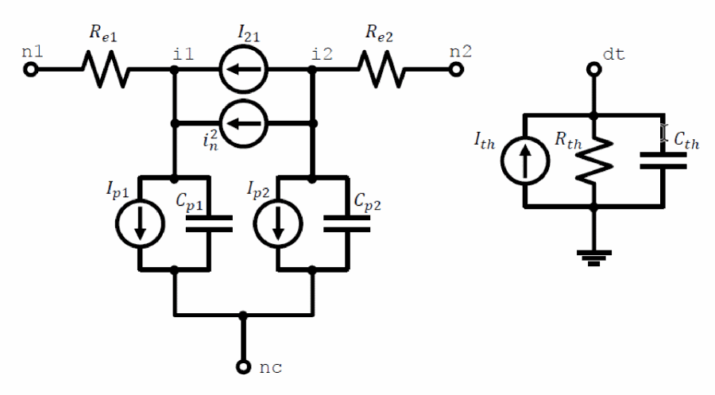
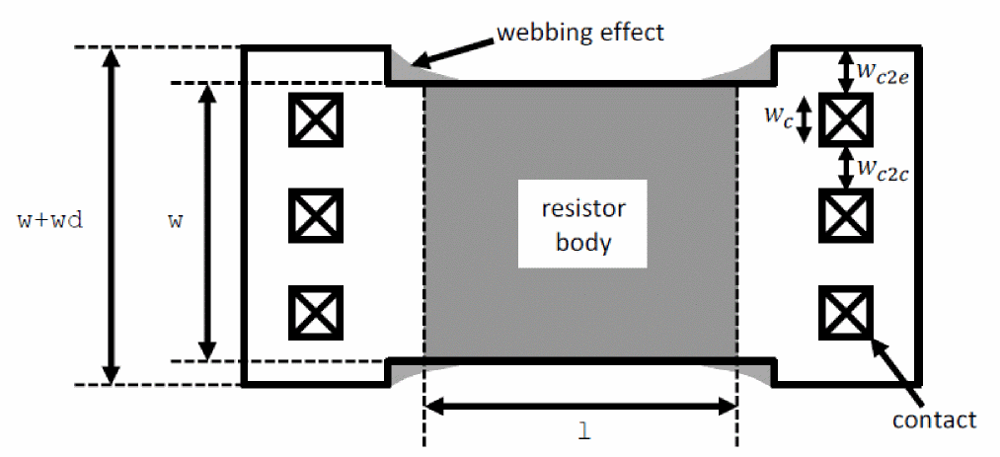

Usage
Exact usage may be simulator dependent. For example, whether the local temperature rise node for self-heating is made available or not, and whether the initial instance key-letter “r” is required.)
r<instanceName> (<n1> <nc> <n2> [dt]) <modelName> <instanceParameters>
.model <modelName> r3 <modelParameters>
The dt node is the rise above the local temperature caused by the thermal power dissipated by the device being modeled.
Figure -1 r3 Model Equivalent Network

Example
r00 n1 n2 n3 p0 l = 2e-6 w = 10e-6 m = 10 sw_et = 1
model p0 r3 type=1 shrink=50 xw=0.01 nwxw=0.1 wexw=0.1 xl=0.01xlw=0.2 dxlsat=0.01
+rcw=0.01 ca=1e-4 cja=1e-4 cp=1e-10 cjp=1e-10 dfw=1e-3 dfl=1e-3 dfwl=1e-3
+tc1=1e-3 tc2=1e-4 tc1l=1e-3 tc2l=1e-4 tc1w=1e-3 tc2w=1e-4 tc1rc=1e-3 tc2rc=1e-4 tc1kfn=1e-3
+tc1vbv=1e-3 tc2vbv=1e-4 tc1nbv=1e-3 sw_dfgeo=0 rc=1
The parameter examples are given below..
Figure -2 Instance Parameter Examples (End region dogbone may be asymmetric.)

Return to top